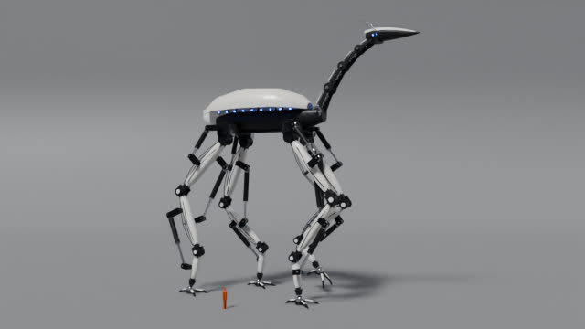
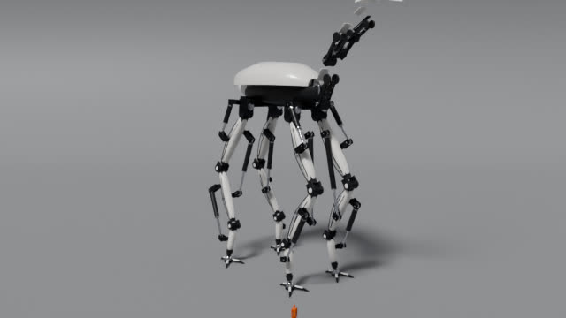
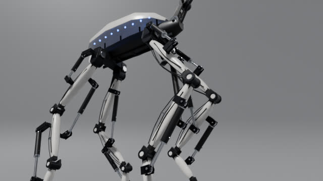
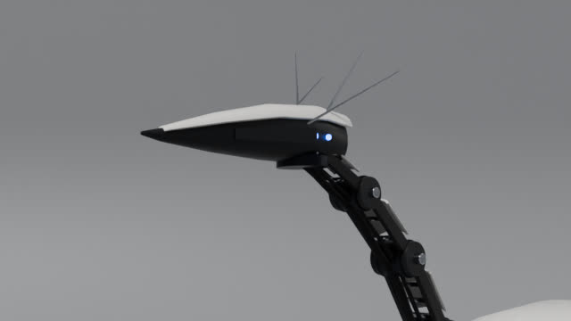
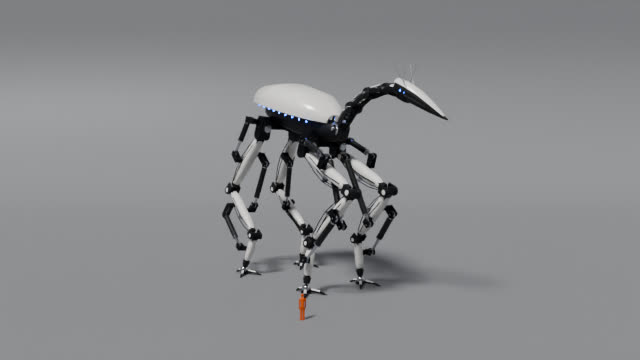
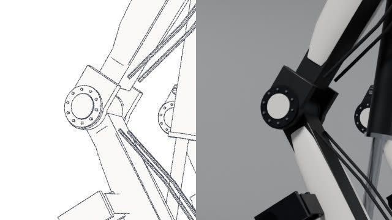
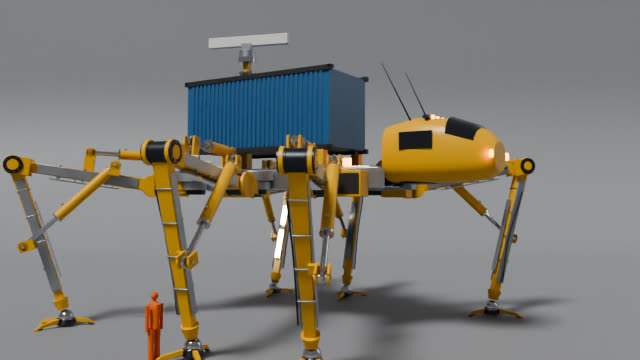
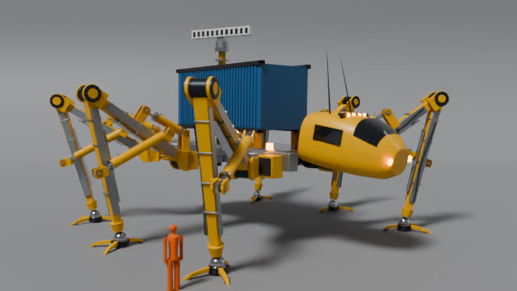
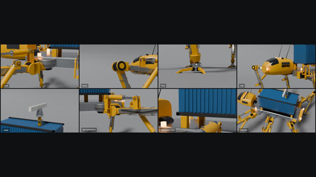
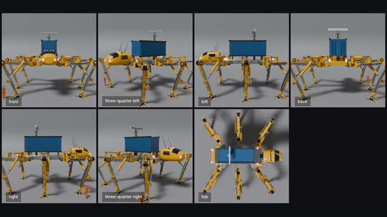

작업 흐름
- 입력
- 주제 한 줄 (선택: 설정화 한 장, 소유자가 허락한 경우에만 이미지 모델로 만든 턴어라운드 · 관절 플레이트)
- 브리프 · 부품표
- 하는 일과 실제 크기, 무게를 버티는 구조(케이블 마스트 · 박스 거더 · 트러스), 다리 종류와 개수, 마감, 걸음 숫자, 큰 동작의 핵심 포즈 —
BRIEF.md, 형상 전에PARTS.md - 만들기
machine.py: 숫자(MACHINE) + 부품 코드(build(k)) — 공용 관절 부품(포크 · 드럼 · 핀 · 볼트 캡 · 실린더 · 러그 · 볼 소켓 발)에 주제마다 몸통 · 짐 · 머리를 새로 씀 → 리그(부품마다 뼈 하나) → 걷기 · 대기 · 큰 동작- 검사
- 블렌더 포즈 = 운동학, 닿는 거리, 반대로 꺾임, 디딘 발 미끄러짐(mm), 지지 발 수, 로드가 실린더 안에 남는지 · 지렛대 길이, 모든 동작에서 부품끼리 충돌, 숨쉬는 대기, 예비 동작 · 회복, 루프, 결정성 — 15개 →
REVIEW.md - 출력
.blend, 동작별 애니메이션이 든.glb+ three.js 플레이어, 턴어라운드(양쪽) · 동작 시트 · 관절 플레이트, Cycles 빌드 릴 MP4
python3.13 -m venv ~/.venv-bpy
~/.venv-bpy/bin/pip install bpy
S=path/to/machine-build-reel; PY=~/.venv-bpy/bin/python
$PY $S/scripts/machine.py new my-machine --from ridge-hauler
cd my-machine # BRIEF.md · PARTS.md → machine.py
$PY $S/scripts/machine.py check # → out/REVIEW.md
$PY $S/scripts/machine.py sheet
$PY $S/scripts/machine.py reel --res 640x360 --samples 14
$PY $S/scripts/machine.py player요구 사항: 블렌더의 파이썬(pip install bpy 또는 블렌더 본체), ffmpeg, GPU가 없으면 선 도면용 Mesa EGL. Cycles를 CPU로 씁니다. 단계별 순서는 SKILL.md에 있습니다.
샘플
원본의 Stilt를 다시 만들지 않고, 이 스킬로 새로 설계한 기계 두 대입니다. 스틸은 빌드 릴(블렌더 Cycles, 640×360)과 검토 시트에서 뽑았고, 카드를 누르면 같은 기계의 .glb가 three.js 플레이어에서 그 동작으로 재생됩니다.
WADER starter · 25 m 네발 보행 기계
얕은 물과 습지를 왜가리처럼 건너는 기계. 세 마디 다리 4개(유압 실린더 12개), 사다리 목과 파란 센서 머리, 뒤로 끌리는 수염. 흰 세라믹 슬리브 아래 검은 카본 기둥과 힘줄 케이블이 무게를 받습니다. 부품 153개, 뼈 67개.






RIDGE HAULER examples/ridge-hauler · 새 주제로 만든 예제
길이 없는 산골로 20 ft 컨테이너를 나르는 9 m 여섯발 화물 기계. 곤충 다리(돌아가는 coxa + 두 마디), 세발씩 걷기, 노란 도장 · 아연도금 강철, 승무원 캡, 도는 레이더, 주황 경광등. 짐을 내릴 때 무릎을 꿇습니다. 몸통 · 컨테이너 · 캡 · 레이더는 예제 코드에서 새로 만들었습니다.




시트와 도면 machine.py sheet · reel
릴 전에 사람이 보는 시트입니다. 참고 이미지 없이(코드만으로) 진행하면 설계 시트의 선 도면이 원본의 설정화 자리를 대신합니다.
실제 작품
이 레포에서 만든 스킬입니다. 출발점은 apek(@apekshik)이 X에 올린 87초 영상(회색 스튜디오에서 흰 세라믹과 검은 프레임의 30 m 보행 로봇이 주황색 사람 옆을 걷고, 부품이 조립 순서대로 모이고, 머리가 불빛을 켜며 깨어나고, 설정화 · 턴어라운드 · 관절 플레이트와 만든 모델을 나란히 보여 줌)과 그 글이 소개한 레포 AnyMachine의 방법(참고 이미지 → 부품표 → 빌드 스크립트 → 참고 이미지 옆 확인 렌더 → 영상 모델에서 읽은 동작 → 충돌 검사)입니다. 이 스킬은 그 방법과 스튜디오 모양, 릴 순서만 가져오고, 코드는 새로 썼으며 Stilt의 디자인은 쓰지 않았습니다. 같은 "다리 달린 거대한 것"이라도 안개 속 실사 영화라면 walking-colossus, 조작하는 시뮬레이터 페이지라면 machine-sim이 맞습니다.
링크
- SKILL.md 워크플로
- 폴더 mbr · scripts · player · starter · examples · templates
- README.md 빠른 시작
- references/SOURCE.md 원본 영상의 구간과 이 스킬의 대응
- references/PIPELINE.md 참고 이미지부터 시작하는 순서, 명령으로
- references/BRIEF.md 브리프 틀과 검토 기준
- references/MECHANISMS.md 관절 · 하중 경로 · 공용 부품 · 새 부품 쓰기
- references/MOTION.md 걸음 숫자, 핵심 포즈로 쓰는 동작
- references/REEL.md 릴의 여덟 구간
- references/REFERENCES.md 이미지 · 영상 모델, 허락, 코드만으로 하는 길
- references/LESSONS.md 겪은 문제와 해결